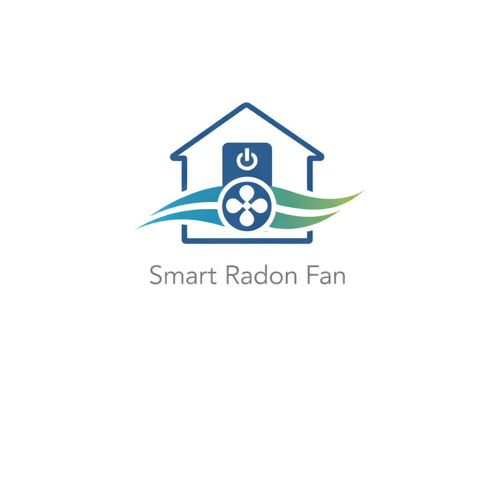
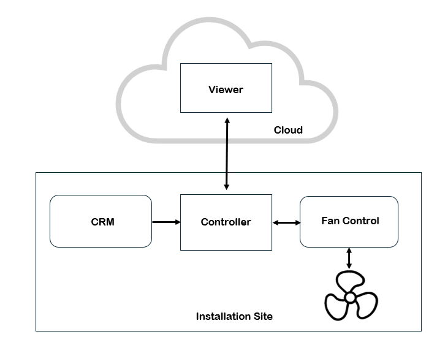

Automated variable-speed radon mitigation
SmRF is designed to use a simple two-wire, low-voltage 0–10 V control connection to compatible variable-speed EC radon fans. Fantech and Festa are planned fan-integration targets. RadonAway may also be supported if suitable two-wire control terminals are exposed and verified for compatibility. The fan retains its conventional AC power connection.

Both controllers are being designed to obtain readings over Bluetooth Low Energy (BLE) from a separate compatible continuous radon monitor, rather than incorporating a radon sensor. Airthings is currently supported. Aranet and Ecosense CRM integration are under development. SmRF provides the target-based control algorithm and a two-wire 0–10 V command for compatible EC fans, initially targeting Fantech and Festa. RadonAway support depends on an accessible compatible interface. Specific fan models require validation. SmRF WiFi additionally supports optional remote reporting and diagnostics.